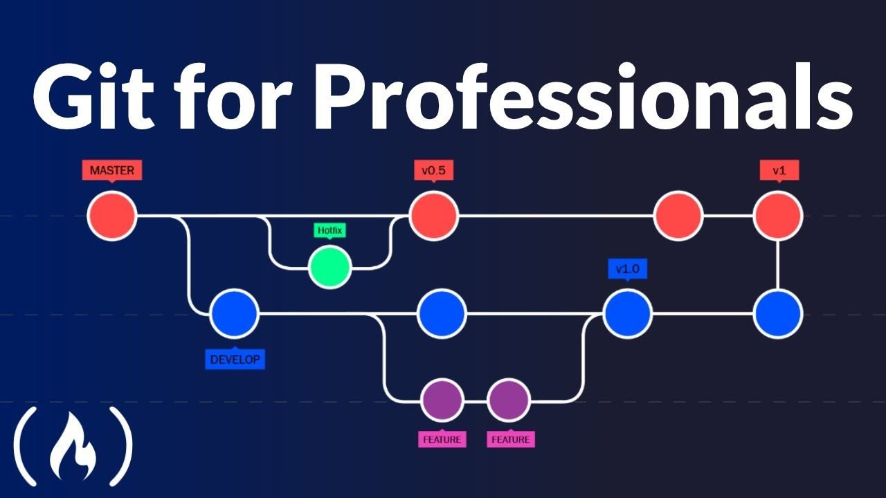
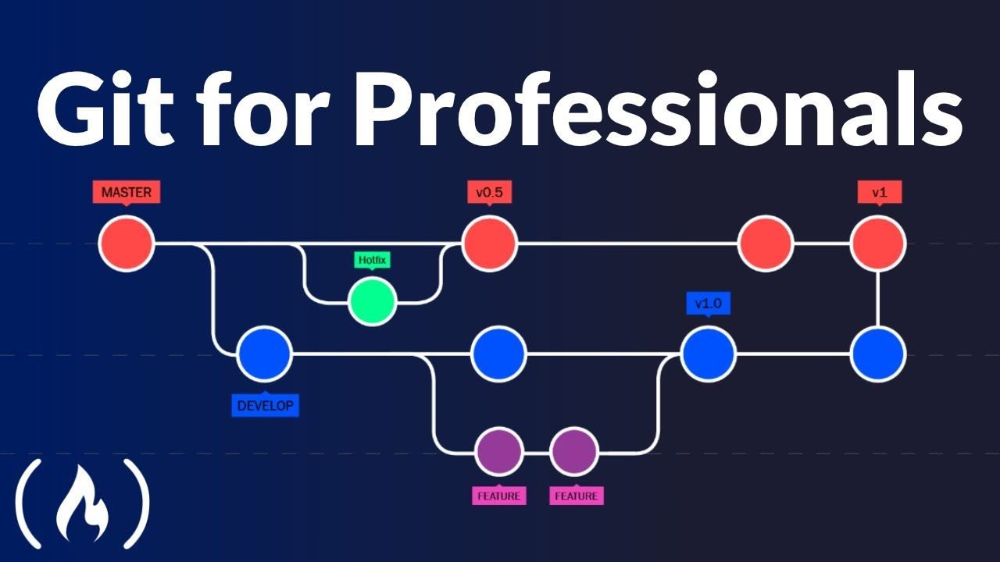

Git Version Control Sytem yang Memudahkan Pekerjaan Programmer
 

Git is a free and open source distributed version control system designed to handle everything from small to very large projects with speed and efficiency.
Git is easy to learn and has a tiny footprint with lightning fast performance. It outclasses SCM tools like Subversion, CVS, Perforce, and ClearCase with features like cheap local branching, convenient staging areas, and multiple workflows.
What is Git?
By far, the most widely used modern version control system in the world today is Git. Git is a mature, actively maintained open source project originally developed in 2005 by Linus Torvalds, the famous creator of the Linux operating system kernel. A staggering number of software projects rely on Git for version control, including commercial projects as well as open source.
Git is software that runs locally. Your files and their history are stored on your computer. Having a centrally located place where you can upload your changes and download changes from others, enable you to collaborate more easily with other developers
At some point in any software project, you will need to share your code with other developers. If you’re using Git for source control, there are three primary options:
- Github
- Gitlab
- Bitbucket
You can learn more at Git Docs.
Why should you learn Git?
As software developers, whether you are hoping to build the next thing that will change the course of history or you just want to know enough to make ends meet, chances are you will not do this alone which means you need others to actualize that dream. If you fall anywhere within this wide spectrum then you need to learn git as soon as possible.
- Git is the most popular distributed version control system
- You will work with others
- Git is not as hard as you think
- Remote is becoming the norm
- To have fun 😃
Hopefully you learned something new here. See you next time!